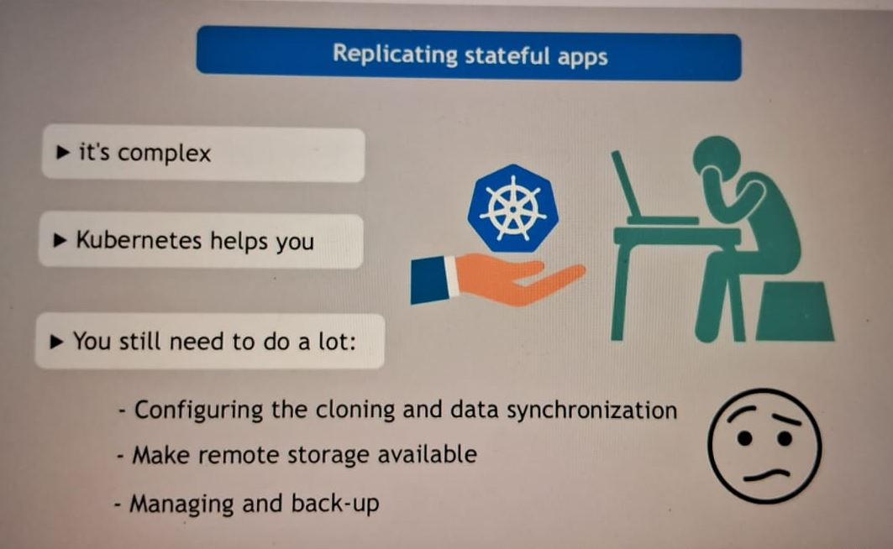
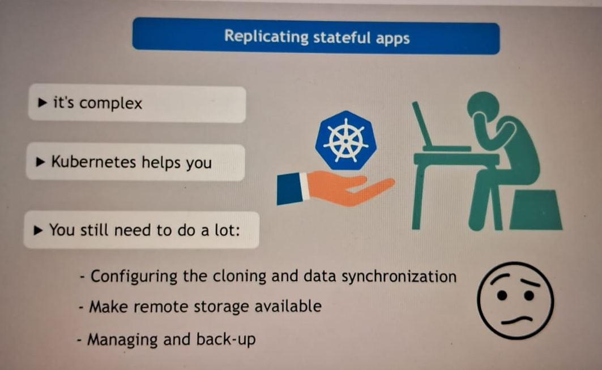

Def: StatefulSet is the workload API object used to manage stateful applications.Manages the deployment and scaling of a set of Pods, and provides guarantees about the ordering and uniqueness of these Pods mainly used for database application , where data read and write done.
 
